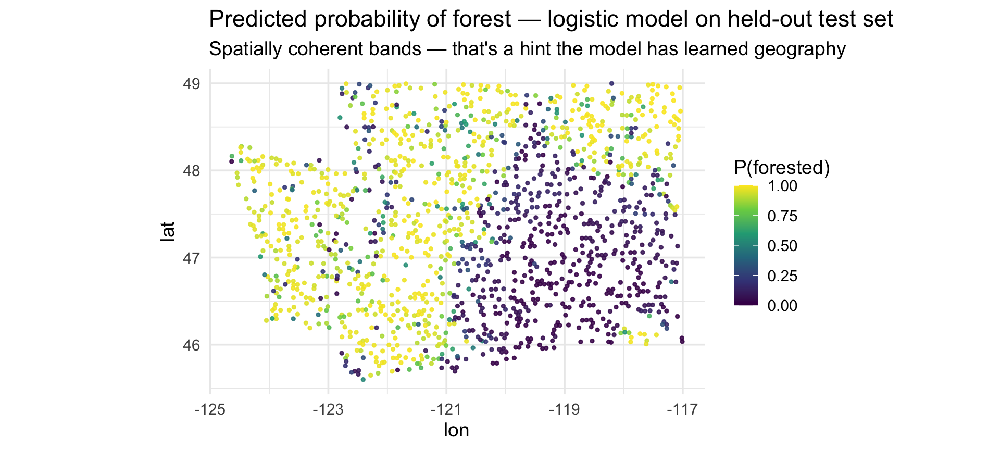
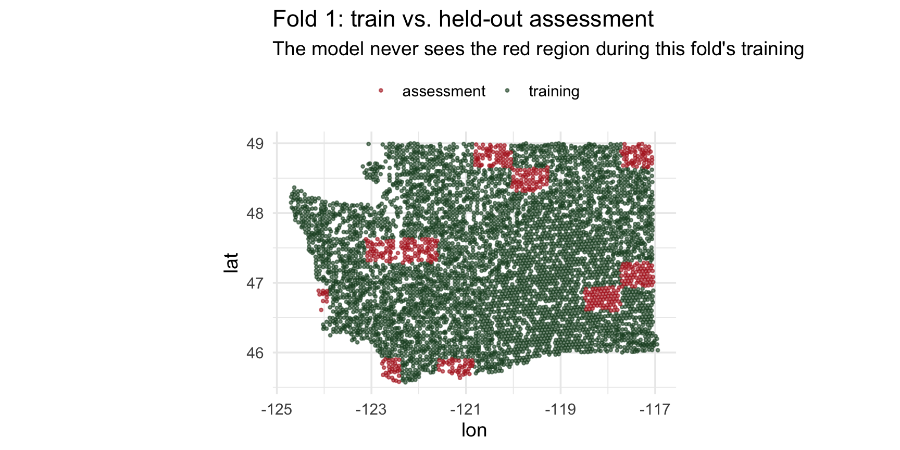
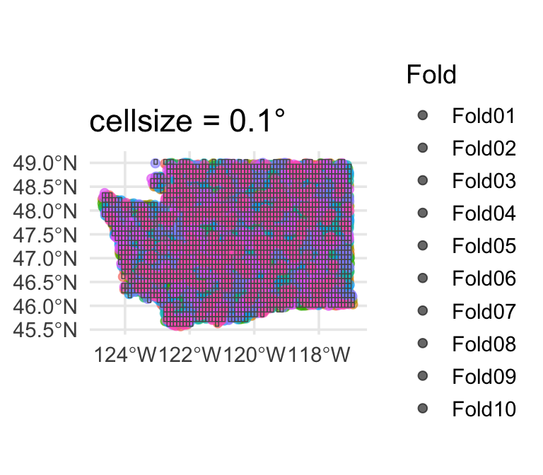
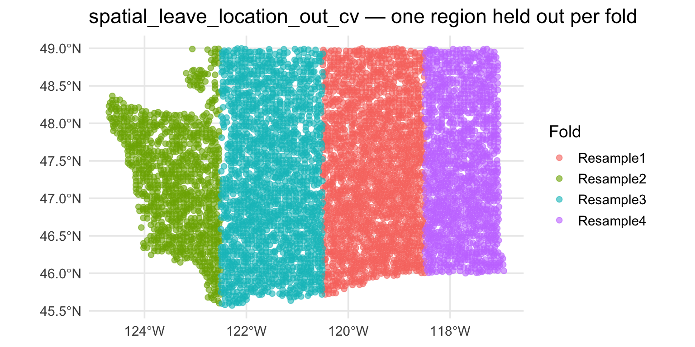

Week 5
Beyond collect_metrics(): Interpretation & Spatial Resampling
Part 1: Which features mattered? 

The vip package 
vip is a lightweight, tidymodels-friendly interface for importance plots.
- Works with
parsnip/workflowobjects viaextract_fit_parsnip() - Supports model-specific importance for most engines
- Supports permutation importance for any model via
vip::vi_permute() vip()returns aggplot— easy to customize
Rebuild the forested pipeline 


Exactly what we had last week — no new concepts yet:
set.seed(123)
forested_split <- initial_split(forested, strata = forested, prop = 0.8)
forested_train <- training(forested_split)
forested_test <- testing(forested_split)
forested_folds <- vfold_cv(forested_train, v = 10, strata = forested)
forested_recipe <- recipe(forested ~ ., data = forested_train) |>
step_impute_mean(all_numeric_predictors()) |>
step_dummy(all_nominal_predictors()) |>
step_normalize(all_numeric_predictors())Model-specific VIP 
Logistic regression
Importance = absolute value of standardized coefficient.


Agreement and disagreement 
A feature’s rank in each model shows where they agree and where they diverge.
log_imp <- vi(extract_fit_parsnip(log_fit)) |>
mutate(rank = rank(-Importance),
model = "logistic")
dt_imp <- vi(extract_fit_parsnip(dt_fit)) |>
mutate(rank = rank(-Importance),
model = "tree")
ranks <- bind_rows(log_imp, dt_imp) |>
group_by(Variable) |>
filter(n() == 2, min(rank) <= 10) |>
ungroup()
ggplot(ranks,
aes(model, rank, group = Variable)) +
geom_line(color = "grey70") +
geom_point(aes(color = model), size = 3) +
geom_text(data = filter(ranks, model == "logistic"),
aes(label = Variable),
hjust = 1.1, size = 3) +
scale_y_reverse(breaks = 1:15) +
scale_color_manual(
values = c(train_color, assess_color),
guide = "none")- Flat lines → robust signal across models
- Swinging lines → model-specific quirks

Tip
VIP is most informative across multiple models. Features important everywhere = probably real signal; features that matter only to one model type are often artifacts of how that model carves up the feature space.
Model-agnostic VIP (permutation) 
Permutation importance works on any model — no internals required.
Algorithm:
- Fit the model.
- Compute a baseline metric (e.g., ROC AUC on a held-out set).
- For each predictor: randomly shuffle it, re-predict, recompute the metric.
- Importance = baseline metric − shuffled metric.
A predictor that, when scrambled, doesn’t hurt performance was not being used.
set.seed(321)
# A wrapper that returns the probability of the "Yes" class
pred_wrapper <- function(object, newdata) {
predict(object, new_data = newdata, type = "prob")$.pred_Yes
}
vip::vi_permute(
log_fit,
train = forested_train,
target = "forested",
metric = "roc_auc",
reference_class = "Yes",
pred_wrapper = pred_wrapper,
nsim = 5
) |>
vip::vip(num_features = 10) +
labs(title = "Logistic regression — permutation importance")Permutation importance is slow (shuffles + re-predicts once per feature per nsim), so you usually run it offline and save the result.
What does the model actually predict? 

Before asking is the CV honest, let’s look at the predictions themselves. The forested dataset is spatial — map the predicted probability of forest for every test hexagon:
test_preds <- augment(log_fit, new_data = forested_test)
ggplot(test_preds, aes(lon, lat, color = .pred_Yes)) +
geom_point(size = 0.8, alpha = 0.85) +
scale_color_viridis_c(option = "viridis",
name = "P(forested)",
limits = c(0, 1)) +
coord_quickmap() +
labs(title = "Predicted probability of forest — logistic model on held-out test set",
subtitle = "Spatially coherent bands — that's a hint the model has learned geography")
Notice the smooth spatial gradients in the predicted probabilities. That is informative — but it’s also a warning sign: either (a) the environmental drivers really do vary smoothly in space, or (b) the model is using spatial location as a shortcut.
CV is supposed to tell us which. That’s where the honesty question comes in.
Residuals, mapped
preds <- augment(log_fit, new_data = forested_test) |>
mutate(
correct = (.pred_class == forested),
residual = as.numeric(!correct) # 1 = miss, 0 = hit
)
ggplot(preds, aes(lon, lat, color = factor(residual))) +
geom_point(alpha = 0.7, size = 0.8) +
scale_color_manual(values = c("0" = "grey70", "1" = "#B22222"),
labels = c("correct", "miss"),
name = NULL) +
coord_quickmap() +
labs(title = "Where does the logistic model miss?",
subtitle = "Red = held-out hexagon misclassified") +
theme(legend.position = "top")
Do you see clumps of red? That’s spatial autocorrelation in the residuals.
The Moran scatterplot 

Moran’s I is the slope of a line through this scatterplot:
- x-axis: the residual at a point
- y-axis: the average residual of that point’s neighbors (the spatial lag)
- points in upper-right / lower-left = clustering
- diffuse cloud around zero = no spatial structure
samp <- samp |>
mutate(lag_residual = as.numeric(W %*% residual))
ggplot(samp, aes(residual, lag_residual)) +
geom_vline(xintercept = mean(samp$residual), linetype = "dashed", color = "grey50") +
geom_hline(yintercept = mean(samp$lag_residual), linetype = "dashed", color = "grey50") +
geom_jitter(width = 0.05, height = 0, alpha = 0.4, color = train_color) +
geom_smooth(method = "lm", se = FALSE, color = "#B22222", linewidth = 1) +
labs(x = "Residual (0 = hit, 1 = miss)",
y = "Mean neighbor residual (spatial lag)",
title = paste0("Moran scatterplot — slope = ", round(moran_res$observed, 3)),
subtitle = "Positive slope confirms: misses cluster next to other misses")
The red line’s slope is Moran’s I. Positive slope → the model’s errors are geographically contagious → random CV is overstating performance.
Part 3: Spatial cross-validation 
Enter spatialsample 
The spatialsample package (a tidymodels extension) provides resampling schemes that respect geography.
| Function | How it splits |
|---|---|
spatial_block_cv() |
Tiles the area with a grid; assigns whole blocks to folds |
spatial_clustering_cv() |
k-means on coordinates, uses clusters as folds |
spatial_buffer_vfold_cv() |
Standard v-fold + removes a buffer of points around the held-out fold from training |
spatial_leave_location_out_cv() |
Leave out one named location (watershed, region, …) |
All produce familiar rset objects — they slot into fit_resamples() and workflow_map() unchanged.
📖 Reference: https://spatialsample.tidymodels.org/
Convert to an sf object 

spatialsample needs spatial coordinates — we pass an sf object:
Note
We keep lon/lat as columns (remove = FALSE) so the model can still use them if it wants to — but conceptually that’s a smell, see Part 4.
Spatial block CV 
library(spatialsample)
set.seed(123)
forested_block <- spatial_block_cv(forested_sf, v = 10)
forested_block
#> # 10-fold spatial block cross-validation
#> # A tibble: 10 × 2
#> splits id
#> <list> <chr>
#> 1 <split [5125/560]> Fold01
#> 2 <split [5114/571]> Fold02
#> 3 <split [5116/569]> Fold03
#> 4 <split [5138/547]> Fold04
#> 5 <split [5111/574]> Fold05
#> 6 <split [5109/576]> Fold06
#> 7 <split [5123/562]> Fold07
#> 8 <split [5115/570]> Fold08
#> 9 <split [5086/599]> Fold09
#> 10 <split [5128/557]> Fold10
Compare the fold maps
Random vfold_cv

Every fold contains points from every region of Washington. A held-out point has a training point next door.
spatial_block_cv

Each fold is a contiguous region. Holding it out simulates predicting somewhere the model has never seen.
Zoom in on one fold 
What does one spatial fold actually look like? Pull out fold 1 and plot its training and assessment sets:
fold1 <- forested_block$splits[[1]]
train1 <- analysis(fold1)
test1 <- assessment(fold1)
bind_rows(
train1 |> mutate(role = "training"),
test1 |> mutate(role = "assessment")
) |>
ggplot(aes(lon, lat, color = role)) +
geom_point(alpha = 0.6, size = 0.7) +
scale_color_manual(values = c("training" = train_color,
"assessment" = "#B22222")) +
coord_quickmap() +
labs(title = "Fold 1: train vs. held-out assessment",
subtitle = "The model never sees the red region during this fold's training",
color = NULL) +
theme(legend.position = "top")
This is the geometry random vfold_cv was quietly destroying: under random CV, those red points would have been surrounded by green ones.
Block size matters 
spatial_block_cv() takes a cellsize argument (in CRS units). It controls the tile side length — and therefore how much spatial separation you actually get.
Small blocks (~0.1°)

Too small — folds interleave again, essentially random CV.
Default (~0.5°)

Usually a reasonable starting point.
Large blocks (~1.5°)

Very conservative — few effective folds, high fold-to-fold variance.
Tip
Rule of thumb: set cellsize to the spatial range of autocorrelation (from the variogram or Moran’s I distance bins). You want neighboring training points far enough from the test block that the model can’t just interpolate.
Re-fit the forested workflow 


Identical to last week — only the resamples argument changes:
set.seed(2024)
cls_metrics <- metric_set(roc_auc, accuracy, brier_class)
ctrl <- control_resamples(save_pred = TRUE)
log_rs_random <- log_wf |>
fit_resamples(resamples = forested_folds, metrics = cls_metrics, control = ctrl)
log_rs_spatial <- log_wf |>
fit_resamples(resamples = forested_block, metrics = cls_metrics, control = ctrl)ROC curves: random vs spatial folds 

Pull the out-of-fold predictions from each scheme and overlay their ROC curves:
roc_data <- bind_rows(
collect_predictions(log_rs_random) |> mutate(scheme = "vfold_cv (random)"),
collect_predictions(log_rs_spatial) |> mutate(scheme = "spatial_block_cv")
) |>
group_by(scheme) |>
roc_curve(truth = forested, .pred_Yes)
ggplot(roc_data,
aes(1 - specificity, sensitivity, color = scheme)) +
geom_abline(linetype = "dashed", color = "grey70") +
geom_path(linewidth = 1.1) +
scale_color_manual(values = c(train_color, "#B22222")) +
coord_equal() +
labs(title = "Out-of-fold ROC curves",
subtitle = "The spatial curve sits below the random curve at every threshold",
color = NULL) +
theme(legend.position = "top")
This is the same story as the AUC numbers, but now you can see it: the random-CV curve hugs the corner more tightly because the model is being graded on points it has near-neighbors for.
It’s not just lower — it’s more variable 
The mean hides the story. Pull per-fold metrics with summarize = FALSE:
per_fold <- bind_rows(
collect_metrics(log_rs_random, summarize = FALSE) |> mutate(scheme = "vfold_cv (random)"),
collect_metrics(log_rs_spatial, summarize = FALSE) |> mutate(scheme = "spatial_block_cv")
) |> filter(.metric == "roc_auc")
ggplot(per_fold, aes(scheme, .estimate, color = scheme)) +
geom_boxplot(width = 0.3, outlier.shape = NA, alpha = 0.3) +
geom_jitter(width = 0.08, size = 2.5, alpha = 0.8) +
scale_color_manual(values = c(train_color, "#B22222"), guide = "none") +
labs(y = "ROC AUC (per fold)", x = NULL,
title = "Per-fold ROC AUC by resampling scheme",
subtitle = "Spatial CV is both lower on average AND more variable across folds")
Random CV gives you 10 near-identical numbers (every fold looks like the whole dataset). Spatial CV gives you a distribution — and that spread is your honest estimate of how much skill depends on which region you’re predicting. Report both the mean and the variance.
Where does spatial CV struggle? 
Each spatial fold’s held-out region has a location. We can map each fold’s held-out AUC to see which regions are hardest to predict:
fold_auc <- collect_metrics(log_rs_spatial, summarize = FALSE) |>
filter(.metric == "roc_auc") |>
select(id, fold_auc = .estimate)
fold_locations <- purrr::map_dfr(
seq_along(forested_block$splits),
function(i) {
assessment(forested_block$splits[[i]]) |>
st_drop_geometry() |>
select(lon, lat) |>
mutate(id = forested_block$id[i])
}
) |> left_join(fold_auc, by = "id")
ggplot(fold_locations, aes(lon, lat, color = fold_auc)) +
geom_point(size = 0.8, alpha = 0.8) +
scale_color_viridis_c(option = "magma", name = "Fold AUC") +
coord_quickmap() +
labs(title = "Per-fold ROC AUC mapped to the held-out region",
subtitle = "Dark = model struggles in that region; light = model generalizes well there")
The regions where AUC is lowest are the places your model has the least transferable signal. That’s a scientific finding, not just a number — it tells you where you need more training data or a better feature set.
Alternative: spatial_clustering_cv 
When blocks don’t fit your data (e.g., irregularly shaped study regions), cluster-based folds are often better:
set.seed(123)
forested_cluster <- spatial_clustering_cv(forested_sf, v = 10)
autoplot(forested_cluster) +
labs(title = "spatial_clustering_cv: k-means on coordinates")
Same API — drop it into fit_resamples(resamples = forested_cluster) and go.
Alternative: buffered v-fold 
What if you want random folds but guarantee no training point is within, say, 10 km of a test point?
- Each training set has points within
bufferof held-out points removed - Preserves fold size randomness; enforces a minimum spatial gap
- Good compromise when blocks are too coarse but random CV is too leaky
Warning
buffer is expressed in the units of the CRS. Buffers on geographic (lon/lat) CRSs give meaningless results — always transform to a projected CRS first.
Alternative: leave-location-out CV 
For water resources, the natural spatial unit isn’t usually a square block — it’s a watershed, gauge basin, or ecoregion. spatial_leave_location_out_cv() holds out one named group at a time:
forested_region <- forested_sf |>
mutate(region = case_when(
lon < -122.5 ~ "Coastal",
lon < -120.5 ~ "Cascade",
lon < -118.5 ~ "Central",
TRUE ~ "Eastern"
))
set.seed(123)
forested_lloc <- spatial_leave_location_out_cv(
forested_region,
group = region
)
autoplot(forested_lloc) +
labs(title = "spatial_leave_location_out_cv — one region held out per fold")
Each fold trains on 3 regions and predicts the 4th. This directly answers “if I trained only on coastal WA, could I predict eastern WA?” — a question vfold_cv literally cannot answer.
Note
In your project, replace region with the natural group — HUC8 watershed, USGS gauge basin, state, PRISM climate zone, etc. The group argument just needs a column name.